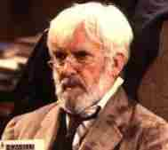
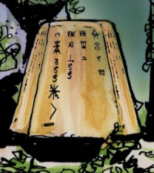

The History of The Time Lords Part I I I
MIDDLE GALLIFREYAN PERIOD
The Pre-Doctor Era

TABLE OF CONTENTS

Use Mouse to click on paragraphs to reveal color coding for sources
THE HISTORY OF THE TIME LORDS PART III: MIDDLE GALLIFREY
The Time of the "Morbius" Doctors
This Time Line covers the period leading up to the Doctor's birth, which occurs approximately 2,000,000 years after Rassilon assumed power on Gallifrey (based off The Infinity Doctors and The Gallifrey Chronicles). All dates are given in Gallifreyan years (which are the same as Earth years) and are based off the looming of the William Hartnell Doctor, hence they are all negative.
Once the Eye of Harmony is anchored, time began moving at a different speed on Gallifrey then the rest of the Universe. The Doctor was born around March 30th, 1213 AD and when Greyjan had served one year as President of Gallifrey (and the Doctor was 753), the Earth date was 1752 AD. It should also be noted that this differential isn't constant, but is slowing by about 1 second every hour (so about 1 year for ever 3,600 years).
The following information contains many spoilers.
After 2,000,000 years the Time Lords become the one of the longest lived culture
in the History of the universe. Gallifreyans often claim to have had complete power for 10,000,000 years but
many lesser species believe that the often-quoted 10,000,000-year figure for Time Lord power was simply made up to
suggest a very long time.
At the end of the Time War Rassilon will claim that the Time Lords have been around for 1,000,000,000 years.
Its likely that this too is War Era propaganda.
Anthropological projections indicate that it is utterly impossible for a society such as Gallifrey’s
to remain stagnant for any of the above mentioned numbers.
Humans and Gallifreyans are the only races whose cultures can not be accurately predicted by these projections.
It is possible that the Time Lords being linked to the Fifth Dimension might explain the hyper-consistency of Gallifreyan
culture.
Patience?
?? Patience lives in the House of Lungbarrow
for countless generations,
posing as a loom born Gallifreyan.
-500,000?? (at least half a million years before The Doctor’s Wife / ages before The Doctor's Wife) Gallifreyan legends speak of a place in Null-Space called Nineveh where Gallifreyans go to die. Within this bubble universe attached to the outside of the Universe is a sapient organic creature called House. House surrounded by a hard outer shell that looks like an asteroid. This world is occupied by the non-corporeal Watcher of Nineveh and is covered with ruined timeships. The reason for this is that House feeds on rift energy from the main Universe and excretes bubble universe rift energy. This is why House is surrounded by raw rift energy. But there is no rift energy in its bubble. In order to obtain pure rift energy from the main universe, House begins to lure Time Lords through the Void to his bubble universe. Once there, he would drain the TARDIS of the artron energy in its Heart. In order to eat a TARDIS House must first remove the timeship’s consciousness otherwise the TARDIS’s defense mechanisms would destroy House. Deleting the consciousness while it was still connected to the TARDIS translevel powers systems would blow a whole in the universe (this might have been how House first ended up in the plug-hole universe.) Instead, House pulls out the TARDIS Matrix and places it in a living receptacle and feeds on the TARDIS. The sentient matrix is placed in a human body so that he would burn out while a safe distance from the main control room. The wrecked TARDISes would then fall apart. The Watcher of Nineveh ensured that only Gallifreyans who had consumed all 12 of their regenerations (and were thus no-longer Time Lords) would be drawn there. Together with the Watcher, House killed hundreds of Time Lords.
-309,456 (Probably 309456 years before the Doctor's looming)
The Date Index method of dating goes into
use
-249,000
(250,000 before TID)
The Blank Plague is eradicated.
Despite this the chambers of the High Council and the Supreme Council are sterilized before each session.
Pengallia (aka Pandora) is one of the Priestess of the Sisterhood of Karn and a decedent of the Great Mother of Sisterhood of Karn. She renegades from the Sisterhood and arrives on Gallifrey with a large amount of Elixir. She convinced the High Council that she could find a solution to the Curse of sterility and was made a Time Lady. She takes the name Pandorastrumnelliahanfloriana (aka Pandora). The name Pandora shows up in the mythology of lots of planets. In every case she unlocks things that should have remained hidden. She might be connected to the fair-tale of Snow White and the Key of Nevermore, both of which were sealed in a box to never be opened.
?? Time Lady Pandorastrumnelliahanfloriana develops a theory that states that if the psychic reduplication processes used by the Friars of Pangloss were every used in an area of space on the fringe of normal space and/or unsimple special interfaces the process would suffer a severe dysfunction.
-156,400~ (a few years after becoming a Time Lord)
Pandora begins serving on the High Council
and
takes the title Majestrix. I wonder how long he was in that body-cononical wise? 2-300 years?
The Time Lady Pandorastrumnelliahanfloriana becomes the first female President of Gallifrey. According to the book of the Old Time it is permissible for a Lady President to declare herself Imperiatrix. This Edict allows the Imperiatrix exclusive access to the Matrix, the Great Key, and the biodata of the every Time Lord on Gallifrey. She is not answerable to the High Council and has the authority to disband the Chapters. Pandora took the title Imperiatrix and begins overthrowing the traditions of Rassilon, with a plan to take Gallifrey to war with the Cosmos.
-156,190~ (10 years before her fall / before TID / ~ 30,024 BC??)
Pandora begins secretly collecting artifacts of power from across the cosmos. She also sneaks off Gallifrey (no doubt violating the Protocols of Linearity) to set up a vast secret Empire of the Silver Queen in Normal Space. This Empire consisted of hundreds of systems. Pengallia is a Time Lord tyrant causes lots of trouble. The Imperiatrix begins to build an army to restructure history. During this time she had her alien bodyguard kill most of the High Council.
?? (thousands and thousands of years before Lungbarrow)
An event occurs that is as important as Romana's talks with the Sisterhood of Karn.
?? The term “time-witch” is coined as a slur used by lesser species against the Time Lady’s of Gallifrey.
-156,181 (10 years after becoming President /
Date Index 1-5-3-2-7-5 /
~30,022 BC?? /
ages before Romana becomes President
)
The surviving members of the High Council
learns that Pandora has violated the 1st Law of Time. The High Council bribe Pandora's body gaurd to
betray her.
The Civil War occurs and destroys the ancient capitol.
?? (Generations before the Morbius Crisis)I wonder how long he was in that body-canon wise? 2-300
years?
The Capitol Guard is forced to fight. This is the last
time it will engage in combat for generations.
After the Civil War, Pandora's the bodyguard was trapped on her home planet with an 6.8 second timeloop and Pandora was executed via D-Mat dispersal. On Gallifrey, legends will claim that the soul of the Imperiatrix lives on as a ghost in the Vaults. On Earth the stories will tell of Pandora and the box she opened. Other legends speak of the greatest warrior in the universe (sometimes describe as a goblin) who fell from the heavens and tore the world apart until a good wizard locked it up in the Pandorica. In reality Pandora lives on in a partition in the Matrix which has an access point to the Matrix. The Imperiatrix manipulates the genetic House of Hartshaven down through the ages in an effort to recreate Pandora in the future. This sort of genetic manipulation is an old trick from the dark days (see the first Otherstide). The new capitol is build on the ruins of the old one leaving the Vaults below.
?? (thousands of years ago)
Verne is loomed.
?? Verne regenerates into a handsome body.
?? (probably at least 2,000 years
after looming)
Verne becomes a Councilor.
?? (eons ago /
billions of years ago / during "a Dark Time")
During the early exploration of the universe,
Time Lords would occasionally be forced into runaway chain regenerations in alien environments. These Time Lords
would turn into horrid monsters. If they managed to return to Gallifrey, they would be killed, walled up in
there own TARDISes, or hidden away by their cousins.
?? (A long time before the Babels are invented)
The family of the House of Catherion
become extinct. Their loom and house are maintained by a caretaker line.
The House of Dvora (or the House of Devouring Hounds) is the first of the Newblood Houses. Several other Newblood houses are founded at this time. The Cousins of the most refined Newblood Houses, such as Dvora, are loomed with two hearts, and have excellent control of their regenerations.
-109,456 (Date Index 2-0-0-0-0-0)
The Time Lords discover the existence of the Doomsday Weapon on the plane Uxarieus. The Time Lord's file on Exerius is just as big as the file on Sol III.
?? Torkal the Great becomes Lord President of Gallifrey. His term in office is second only to Rassilon in legendary greatness.
-99,000 A particularly successful Lord President resigns.
-14,216?
(many thousands of years before the story Shada / probably
15,367 years before the Time War begins
)
The Renegade Presidency:
A schism occurs in the College of Cardinals.
The minor Colleges believe that Prydonians and
Arcalians have too much power and propose electoral reform.
With their own President (previously known as Cardinal Thorac) in the lead they make a peaceful march on the
Capitol. The Watch begins arresting them.
A few of these
revolutionary Time Lord
academicians and bureaucrats
leave Gallifrey and colonize Dronid (or Drornid as it is actually known)
in Galactic Quadrant 5
. They also colonize
Trion.
Cardinal
Thorac
sets himself up as President with his own High Council on Drornid
.
Thorac becomes known as the Heresiarch of Drornid.
The Heresiarch created a massive statue of himself and his court lived inside the statue. He used a pacification
beam to quell any unrest from the nave populace of Drornid.
They had a level 9 and, eventually, early level 10 society. Despite breaking away from Gallifrey, the library
of the Heresiarch is decorated with the Seal of Rassilon
(probably because they saw themselves as the true heirs of Rassilon).
?? (Aeons after the Matrix is created /
billions of years after the Matrix was created / Date Index 310333
/ almost certainly before the Master steals the Doomsday Files )
The Time Lords delegate maintenance
of the Matrix to the Elzevirs of the Moon of Leptonica (in the Daedalus Constellation). The Elzevirs are experts
at micro-technology and are responsible for servicing and refurbishing the micro-circuity of the Matrix. They
often have access to the Key of Rassilon (which allows full access to the Matrix).
Research into altering and controlling one's regeneration is forbidden.
?? (before the 2nd Doctor)
Reverse
Tachyon-Chronons (RTC) are smuggled onto Gallifrey in the form of
books. Any life-form or matter that is kept nearby will cease to
age and deteriorate. Actual contact and manipulation of
an RTC can shift one's body forward or backwards in time, quickly
healing wounds and adding or deleting memories. Because having
too many of them in one place would cause Time itself to be warped they
were banned by the Time Lords.
?? The Type 39 is created. It is very similar to
the Type 40. Salyavin will later steal a Type 39 from a scrap heap.
?? Patience teaches the Doctor's Great Grandfather.
?? (before Savar's mission)
TARDISes are designed to be male or female.
They can telepathically communicate with their operators.
-11,000? This is the time of Quintilian Era. By this point the off-white roundeled look is the default decor for the inside of TARDISes.

Salyavin
Salyavin X (aka Chronotis) is loomed. He becomes a Prydonian. His first incarnation had blond hair and a beard. Salyavin has amazing and totally unique psychic powers, including the ability to put his mind into other people's and alter their memories. Salyavin uses an abacus when he is a Time Tot and enjoys tea and books.

-11,923
(built in year Date Index
295733 /
Salyavin is a boy at this point
)
305 Type 40 Time Travel Capsules (aka
Mark I TARDIS) are created and registered, including The Doctor's.
The Type 40 was not considered to be a great success, and quickly becomes known as a renegade model.
One of the major complaints about the Type 40 is that its kitchen is a long way from the control room.
The TARDISes of the Ship and Lolita’s generation know about the War and the Enemy.
The only crimes Salyavin committed with his powers was a few childish pranks; Like making the President believe that his undergarments were on fire, and making everyone in the Panopticon start dancing. These are the only Mind Crimes that Salyavin has committed.
-11,700?? (While Salyavin is young man)
Salyavin becomes known as a hotheaded, brilliant Gallifreyan.

Rassilon's old Chancellor, the Prydonian Azmael, returns to Gallifrey. He had escaped into the future (possibly using the same method that the Other had). The descriptions the Doctor gives for the Hermit and Azmael are so similar that it is likely that the Hermit ( the Doctor's teacher and guru ) and Azmael ( the finest teacher the Doctor ever had ) are the same person.
-10,500??~ (Thousands of years before Azmael leaves Gallifrey / before the Doctor
leaves Gallifrey)
A Prydonian Time Lord named Pandad
II becomes President.
The Prydonian Azmael is his Chancellor.
-10,297
?
(probably no more then 200 years after being elected)
After the accidental death of Pandad
II,
the Patrxian, Helron, declares himself to be the new President Elect. He is elected and eventually inaugurated.
-10,297
? (before Azmael becomes Co-ordinator of the Matrix / shortly
after becoming President)
Helron changes the Constitution so the
that all Chapters must be represented on the High Council. He also makes it mandatory that the Chancellor be
from the same Chapter as the Lord President. Because Helron was a Patrexian and Azmael is a Prydonian, Azmael
is forced to step down from the post of Chancellor.
-10,297 (before Divided Loyalties /
Date Index 2-9-9-1-5-9)
Azmael becomes a Matrician working in the
Archive Tower
to record the predictions about future events.
His spends thousands of years trying to learn all the secrets of the Matrix. His research into the Matrix makes
him suspicious that someone is feeding him information (it turns out to be Rassilon).
-10,000~?
(He is at the end of his 13th incarnation in The Time of My Life)
The Doctor's Grandfather is born.
His name might have been named Barusa or Borusa I or Pandak III.
Patience lives in his House and tutors him. He will become the
Doctor's Grandfather. He is one of the many Gallifreyans who
worships Omega.
?? (probably less then 11,000 years before The Infinity Doctors)
The Decoupling Era occurs on Gallifrey.
Lord Wratfac begins lecturing at the Patrex College.
?? The Doctor's grandfather marries Varda.
?? Varda and the Doctor's Grandfather have a son who will be the Doctor's father. (they could have been descendants of the Time Scaphe Crew, and thus exempt from the Pythia's curse). Publicly he was from the House of Lungbarrow. The Doctor's father was a powerfully built Gallifreyan with rugged features, white hair, clipped beard, and dark eyes. Patience tutors the Doctor's Father. He will eventually uses the alias Ulysses (as well as John Smith and Danial Joyce) and enjoys exploring the unknown.-9100~ (almost 10,000 years before The Iytean Menace)
Lady Rowellanuraven is loomed. She will become the CIA’s specialist on Earth History
-9000?? (the same generation as Ulysses)
Lady Zurvana, the Time Lord Chancellor (probably Umbast) who is to become The President, the historian Hedin (son of Hedin) are loomed.
-9000 (about a generation before the 5th Doctor / when a lot of Time Lords were pushing a policy of non-intervention)
The Erinsay try to set up their religion on Gallifrey to use the faith of the Gallifreyans to empower themselves. This led to the Time Lords going to war with them. The Time Lords defeated them easily using Military TARDIS and a peace treaty was negotiated. The war between the Erinsay and the Time Lords was about a generation ago, but there are still some Gallifreyans alive who remember the war.
-9000~ At this point it is unthinkable that any species would attack Gallifrey.
Casmus
Casmus is loomed.
-9000? (about 11 incarnations before the Doctor's birth)
Marnal is loomed. He will probably be the Master's "father." If so then he is probably from the House of Oakdown. He dreams of the day that all Time Lords explore the Universe and help those who need help.
-9000~?? (he's in his 10th incarnation in Omega)
Whedol-Ertikus is loomed. He will become a Time Lord Broadcaster and Professor of History.
-9000? (a generation before TID)
The Gallifreyan who will become the President in TID is Loomed. He believes that it is impossible for the Time Lords to have too much power. By the time of TID he has completely changed this view .
-8797~ (one Gallifreyan generation before Movers)
House Ixion predicts the coming Time War. The predict how the Time Lords will have to change to fight the War. They belive they are the first House to do this.
?? (Millions of years after the First Diaspora)
The House Ixion finally dies out after millions of years of decline.

At this point, Time Lord engineers are a little more innovative in designing TARDISes. In a secret experiment a group of Time Lords (possibly the House of Oakdown) take those 13 units of Validium and graft Timeship equations (spawned by the Caldera womb) onto them creating the 40 through 49 Forms. Lolita and the Ship were bound to inside their exo-chronoplasmic shells. The Ship is created in the style of a Type 40 TARDIS, while Lolita is created as a Type 45. The Ship's (the Doctor's TARDIS) Exo-Shell is made (in part) of Validium an ancient sentient tech from the time of the Vampire Wars. Thus the Doctor's TARDIS will be half timeship and half ancient sentient tech from the time of the Vampire Wars. They were probably half Validium on their father's side. Being only half TARDIS on their Mother (probably the Matrix)’s side made them unique. They were “destined” for taking a name for them themselves and to evolving into a humanoid form. The newly registered Type 40 TARDIS known as the Ship instantly knew that she was superior to the other TARDISes. Lolita made sure that Mother was the only one who knew that the two of them weren't like other TARDISes. The Type 40 Ship will become the property of Marnal of the House of Oakdown (and later the Doctor). The Type 45 Lolita will become the property of Koschei of the House of Oakdown (aka the Master). The Doctor's TARDIS has never functioned completely correctly. The Doctor's TARDIS developed a reputation among the Time Lords and other TARDISes of being a disobedient renegade. However, despite Mother’s plan for her, she deliberately chooses to hide her more extreme abilities. Sexy is the Doctor’s TARDIS' name but she keeps that name a secret from everyone.
?? (possibly right after being created)
Being a four dimensional being, the TARDIS secretly archives all 30 future versions of her master control room. This included every change of the desktop theme that she will experience.
?? (a long time before the 4th Doctor / a very long time after the last alien visited Gallifrey)
The Stolen TARDIS: The alien Sillarg attempts to steal Lord Kairel's TARDIS but its had been removed and Sillarg ended up traveling into Gallifrey's past. The Gallifreyan Technician Plutar stopped Sillarg and the alien's memories of Gallifrey were blocked. As a reward Plutar was allowed to reapply to the Academy to become a Time Lord despite his interventionist politics.
?? (this journey probably lasts
at least a few years /
well over 10,000 years before the time of the 5th Doctor)
Ulysses (the Doctor's Father) begins the Odyssey. The Odyssey is a famous journey into Deep Time which
visited every corner of the Universe.
The term Deep Time has been used to refer to alternate universes that no longer "exist" due to alterations to the time
line.
?? The Time Lords fight a war with the descendants of the Great Vampires.
?? (thousands of years before the story Shada)
The Time Lords sacked and devastated the world of Lassademon.
?? (probably less than 10,000 years before Mindbomb)
Humpcheck the Frail becomes the next President of Gallifrey. He drops dead of food poisoning before finishing his acceptance speech and is forced to regenerate.
?? (not long after the Type 40)
The Record of Rassilon is no longer placed in TARDISes.
?? Ulysses makes his first trip to Earth to research Unified Field Theory. He visits Copernicus, Newton, and Einstein. He believes that he has a mission on Earth to keep the world on the path of peace and progress. On Earth he becomes a member of the OSS.
Iris's TARDIS disguised as the Number 22 to Putney Common
Iris Wildthyme's TARDIS is created. It is the same size on the inside as the out. This experimental TARDIS design is later abandoned.
?? (ruled for 900 years / must
be after -9250
/ during the modern era)
Pandak III becomes President of Gallifrey. Some sources claim that Pandak III and Pundat I were the same person.
He holds power for 900 years making him one of the longest serving Presidents in the last 10,000 years.
Matrix Coordinator Rellox of the Arcalian Council for Temporal Research writes a report on the Lampreys to aid in the Time Lord's attempts to keep the Lampreys from interacting with reality. The Lampreys are sentient beings that live in the Spiral at the axis of the Space Time Vortex and feed off of chronon energy. Under certain conditions they can escape into the rest of the universe. Pandak III has this report suppressed.
?? (while Pandak III is President)
Bottles of Orneilian Wine of this vintage are well regarded by Gallifreyans (but despised by lesser species).
?? (at the end of Pandak's reign)
President Pandak III was murdered in the Panopticon.
-6600~ (over 9 incarnations before Invasion of Time)
Gomer was
loomed.

-6660~ Quences (Quencessetianobaylocaturgrathadadeyyilungbarrowmas) is loomed. He might have been the brother of the Doctor's great-grandfather. Quences is obsessed with funeral rites. Throughout Quences's life the House of Lungbarrow will produce only servants and petty clerks. Oddly he doesn't seem to consider Braxiatel (who was from Lungbarrow and was a very distinguished Time Lord), nor does he mention the Morbius Doctors (but then nobody, including the Doctor himself, seems to remember the Morbius Doctors) when he claims that all the cousins of the House were only servants and clerks.
?? (less than 10,000 years before the
Doctor is loomed)
Drall is loomed.
-6000??
(the archivist can remember him and he still has a few incarnations left as
of Lies)
Pandak VIII is President.
-6000??
(thousands of years before The Pyralis Effect)
The energy based Pyralis swarmed through the
Kasterborous Sector. They are finally defeated after a century long war and trapped in a temporal void. Their
foes may or may not have been the Time Lords.
-5500~??
(he spent half his life living there)
The
Prydonian Hermit
Azmael begins
serving as an
ornamental
hermit
for the House of Lungbarrow
. He lives halfway up Mt.
Lung,
behind the House
of Lungbarrow. He will spend half his life there, and most of that sitting under a tree behind the house.
The Hermit is from south Gallifrey and becomes a Time Lord with the title of Monk of the
Eremite order
(
just like I.M. Foreman).
The descriptions the Doctor gives for the Hermit and Azmael are so similar that it is likely that the Hermit
(
the Doctor's teacher and guru
)
and Azmael
(
the finest teacher the Doctor ever had
) are the same person.
?? A roaming group of CIA agents rescue
the Catuvelauni from the Romans. There King Constantine is given technology that allows him to create a dreamland
for his people to live in.
?? Minatorius: A Time Lord visiting the planet Minatorius is killed preventing the explosion of a reactor.
?? (probably before Quences died)
President Cholem dies from slipping
on the Panopticon steps and splitting his head open.
-5251 All Type 40 TTCs undergo a checkup.
- Morbius
The earliest known face worn by the Doctor (Christopher Barry)
-4500?? (Several thousand years before Doctor Who and the Silurians / at least 75 years after Quences is born)
The Other emerges from the looms as the Chris Barry Doctor. The Morbius Doctor was the eccentric oldest son of his family who was supposed to receive his father’s inheritance. The Doctor has had some bodies and lives that he doesn't admit to. This Doctor will be nicknamed the Maverick.
The "Morbius" Doctors
The mystery of the Morbius Doctors is a tricky problem. They appear to exist before the Doctor left Gallifrey, and yet the Doctor and most (if not all) Time Lords regard the Hartnell Doctor as the Doctor's first body. It is know that the Doctor was married to Patience for much of time he spent in these lost incarnations, and that both he and his sons served on the High Council. It is also known that the Doctor had not regenerated and had no interested in romance when he turned 200 at the Academy. In order to get married and have a son that served on the high Council it would seem likely that the Doctor would be at least 330 when he was in the Camfield body. However the Doctor's leaving Gallifrey would have had to occur at this point. For now I'm assuming that the Morbius Doctor's were a reincarnation of the Other that occurred shortly before the birth of the Hartnell Doctor. He married Patience, raised a family and the Doctor (and his son) served on the High Council. When the Council discovered that the Doctor having naturally born children the Watch attacked and the family was scattered. After experiencing at least 8 incarnations the Other Jumps Looms (ie enters the loom distributor and was woven into the biodata of the Hartnell Doctor), who was conceived with the help of the Loom of Lungbarrow. Thus the Hartnell (and all subsequent Doctors) are a mix of the Other, the Morbius Doctors, and the half human half Gallifreyan conceived by Ulysses and Penelope.?? (at least a 50 years after his birth / 2 million years after the Curse )
Patience teaches the Doctor to dance, which causes a minor scandal with his family. The Doctor believes that his tutor is one of the most attractive people he's ever seen.
?? Patience and the Doctor fall in love. She is the Doctor's first love.
The Doctor and Patience are married in a secret ceremony. Savar was present at the wedding. The Doctor believes that he was rubbish at his own wedding (and all other weddings). Patience acquires a pendent with an identical stone. The blue ring and an identical blue pendent are the wedding 'rings'. The Doctor acquires the ring with the blue stone and can interface with a TARDIS powers systems. Mortimus will also wear an identical ring. These pieces of jewelry have amazing powers and appears to serve as a back up Artron Energy source, that can be used to jump-start the TARDIS and assist in regeneration. Once the Time Lord has regenerated the ring might be useless.
?? The Doctor and Patience live in the House of Blyledge, one of the senior houses in the Prydon Chapter of Glorious Gallifrey. The House of Blyledge is an angular small dark building that is older than the hill it sits on. It has a walled garden of silver trees in its center, and is within visual sight of the Capitol. Its cousins wear blue. The Doctor might have been hiding his regenerations by pretending to be succeeding generations of people from the House of Blyledge.

-4000~ (the Inquisitor probably has less than 6 regenerations left at the time of Trial of the Valeyard)
Inquisitor Darkelandrothur of the House of Jurisprudence (aka Darkel ) is loomed. Darkel is a gifted Time Lord who became interesting in the Judiciary at a young age. By the time of Trial of a Time Lord she believes that Gallifrey is headed towards its darkest hour.
-4000?? (thousands of
years before Mind of Evil)
The Doctor becomes a scientist.
The Doctor is considered to be a pioneer among Gallifreyans.
By the time of the Doctor, no one remembers this pioneer's name.
The Doctor is considered to be one of Gallifrey's best TARDIS Engineers.
-4000~?? Gallifreyans become aware that acceleration affects temporal manipulation.
-4000??
(millennia before The Three Doctors)
Omega finally finds ways to reach out of
the Universe of Antimatter by creating time bridges that access the positive Universe. He creates several such
portholes.
The Doctor paints Patience's portrait. When he finishes she informs him that she is pregnant.
??
(a long long time before The Doctor's Daughter)
Much to everyone (including Patience's)
surprise Patience becomes pregnant with with Doctor's child. Patience and the Doctor's
first
child,
a son, is born.
The child of
this first born off-spring (Susan) is the Doctor's granddaughter, Susan.
At the time of the son's birth the Doctor, claims he is getting old.
The Doctor (George Gallacio)
??
(before the granddaughter's birth /
2 million years after the Curse
)
The Doctor had a large family that he
loved. Patience and her husband
(the Doctor) have children,
13 sons and daughters. They wear blue clothes most of the time.
None of them become Housekeeper of Blyledge but they all live and
grow up there.
None of their children are named Miranda.
-3323~??
(299, or
3462 or 4332 before Lungbarrow
)
Jobiska of the House of Lungbarrow is
Loomed.
The new Doctor (Robert Banks Stewart)
The Doctor regenerates. His new body has a beard. The Doctor has had some bodies and lives that he doesn't admit to. This Doctor will be nicknamed the Innocent.
?? (probably before Quences died)
Precept II died from a paper-cut at an archivists' supper.
-2900?~
(4000 years before TID)
Norval becomes a Time Lord.
-2900??
(Several 1000 years before TID )
There is a prophecy that sometime during
the next 10,000 years the Time Lords will face many enemies - one of which will destroy Gallifrey.
Matrix predictions list possible identities for the Enemy. These include: the Omega, the Sontarans, Tannis, Vore,
Faction Paradox, Catavolcus, Varnax, and Timewyrm.
It is said that a Time Lord of this generation will be central to these events. He will find the lost Scrolls
of Rassilon and lead Gallifrey from darkness.
Only the President and the Supreme Council know of the this prophecy and they never talk of it to others.
A sub-committee dealing with the Gallifrey's future War with the Enemy begins deliberation. These discussions
will last at least until TID and presumably beyond.
Satthralope becomes Housekeeper of the House of Lungbarrow.
?? (he was a contemporary of the Doctor when the Doctor was at the Academy)
Savar is loomed.
The new Doctor (Phillip Hinchcliffe)
-2500?? (probably at least 2000 years after the Doctor is born
/ before the birth of the granddaughter)
Patience's husband sits on the Supreme Council and
may have been a Doctor.

Susan's Mom?
??
(probably well over 16 years after being born)
The Doctor's first born son will
marry.
Susan will look a lot like her mother.
One of Susan's parents (almost certainly her mother) was related to Rassilon (who was probably from House Fordfarding).
?? (sometime after graduation)
The Doctor spends many years
as a councilor on the High Council.
-2311 (Jane is from the Class of
307145 / probably about ~3270 years before the events of Forty-Five)
Jane is a
student of the Time Academy from the class of ’45. Antak is
partner. As part of Academy History Module 101 they visit Earth
research Assyrian cosmic influence. A time spike in the Vortex
destroys their TARDIS's time signature and route map home. They
are mistaken for Gods (a Class 2 intervention) by the people of Earth,
and eventually Antak is killed. Jane loses the TARDIS and spend
12 of her lives trying to find it again.
-2251 All Type 40 TTCs undergo a checkup.
-2167~ (probably 3010 years before Mawdryn Undead)
Mawdryn and seven other
Kastron scientists steal a Metamorphic Symbiosis Regenerator from Gallifrey. They are caught by the elders
of their planet and exiled to a ship in a warp ellipse, where they will regenerate perpetually.
The Mawdryn and his friends might have been Fixed in Time like Captain Jack. In both cases, the body is stuck
in time but the mind is not. Are the Kastrons related to Kasterborus? Or are they from Drornid?
?? (several centuries before Trial of the Valeyard)
This is the last time an Arcalian will serve as Lord
President. From this point until Trial of the Valeyard (and beyond) all Presidents will be Prydonian or Patrexies.
?? (centuries ago / when there was an Arcallian President)
The Time Lords of the 6th Doctor's era
went back centuries into Gallifrey’s own timestream and change their own history so that the the standard sentence
for hacking into the Matrix was no longer 500 years of
exile (200 with good behavior). The standard scentence was now execution.
?? (probably before Quences died)
President Rosieh was poisoned by his own food taster.
?? (before the Morbius Crisis / before the Doctor leaves
Gallifrey)
A Time Lord named Pundat I becomes President.
He is the grandfather (Kithriarch or House founder?) of Pundat III.
-2000?? (probalby at least 2000 years after being born)
Patience's first born son becomes
a Cardinal, a Time Lord of the First Rank.
?? (Before Divided Loyalties)
Rannex becomes Castellan.
-2000?? (probably over 2000 years after being loomed)
Through hard work and honesty, Salyavin
advanced through the Ranks of the Time Lords until he became a Junior Senator.
But Salyavin has the ability to project his mind into the minds of others.
T
he
High Council realized that he could use his mind powers to take over the High Council any time he wanted, and they feared
this.
?? (after becoming President)
With the unanimous approval of the High
Council (whom he bribed), President Pundat I
has the Constitution re-written to give each President the right to name their successor.
He hopes to set up a dynasty where only Time Lords of his House can become President.
The new Doctor (Douglas Camfield)
-2000??
(centuries before TID / hundreds of centuries after the Curse / the day before the Grandchild is supposed to
be born / after centuries of being Patience's lover)
Patience's husband,
the Doctor, regenerates. His new body has light colored curly hair and a dark beard.
The Doctor has had some bodies and lives that he doesn't admit to.
The Doctor and Patience's first born son's wife is is going to give birth to the Doctor's grandchild tomorrow.
One of Susan's parents (almost certainly her mother) was related to Rassilon (who was probably from House Fordfarding).
This Doctor will be nicknamed the Scientist.
There is a riot in the Capitol. Fearing that they would lose control when the Doctor's children started having children, the High Council and President uses the Legacy of Rassilon to issue a warrant for the arrest of Patience's husband. The Watch are to search for the Spawn of the Pythia (naturally born children) and investigate allegations that Patience's husband has been consorting with aliens and sharing the secret of Regeneration with naturally born children. The Loom-Born attempt to kill all the Womb-Born. Patience's husband, the Doctor, is in the Capitol while it is partially burned during a riot. Patience doesn't know if her husband has been arrested or not. The Watch tracks Patience down inside the House of Blyledge. The Doctor tries to stop the Watch's arrest of his family but is too late. The Watch kills the Housekeeper of Blyledge, captures Patience, her children, and their associates and hauls them off. Patience's first born son's granddaughter is threatened with abortion .
NOTE: Lance Parkin has stated that the Loom/Womb riots seen in Executive Action are different then the Loom/Womb Riots seen in at the time of Susan's birth.

The Other's and
the Doctor's granddaughter
Susan
The Hand of Omega brings the Hartnell Doctor back in time to save Patience and her granddaughter. The Hartnell Doctor (whom Patience doesn't recognize - except for his ring) witnesses the birth of the Doctor's grandchild, Susan . She looks a lot like her mother. Susan has very strong telepathic potential (more then the Doctor's), that will develop in adolescence, but will require training to be perfected. Susan is a Time Lady and appears to have innate sense of the passage of time and never wears a watch. However she isn't very good at remembering dates. She has two hearts (though a few novels state she only has one) and Emerald green eyes. Her lifespan is much longer then a human's. Susan's mother was killed. A few minutes after Susan's birth the person with the ring (the Hartnell Doctor) finds Patience in the Capitol and takes her to safety y. Susan and her father end up fleeing into Gallifrey's past, possibly with Patience. Susan might have been named Arkytior .
NOTE: Susan was arrived in Ancient Gallifrey shortly after Rassilon made the Pythia's Curse a prosecutable law. Her mother's ghost told her this telepathically but she mis understood it to mean that she'd been born at the time of the Pythia cursed the Gallifreyans.
Since the Hartnell Doctor failed to bring Susan into the TARDIS the Hand takes him back into Gallifrey's past again so that he can take Susan with him.
-2000??
(before the Doctor is born /
after the Master leaves Gallifrey /
shortly after becoming a Junior Senator /
before the Doctor was born / thousands of years before the events of Shada / Salyavin is the Council's newest junior
senator
)
The High Council asks Salyavin to make a tour of the Shada
prison facility. They present him with the Chancellor’s Ambassadorial TARDIS for the trip.
As soon as he leaves the Public Relations Department produced a list of charges including madness, subversive, terrorist,
and
declared him the Great Mind Outlaw.
The PR department states that Salyavin planned to use his powers to enslave everyone on the planet.
Salyavin is found guilty of Mind Crimes
and declared to have been
imprisoned on Shada for mind crimes.
Once Salyavin arrived at Shada in the Ambassadorial TARDIS, he used his powers to make the guards think they had completed
their mission and imprisoned him.
Salyavin escapes Shada
in his own TARDIS and
returns to Gallifrey.
The Time Lord Salyavin
used his powers to convince people that he was an elderly archivist with no political ambitions.
He creates the false identity of
Urban
Chronotis.
-2000??
(a few thousand years before Salyavin steals the book)
The Worshipful and Ancient Law of Gallifrey
is misfiled in the Academy Library.
-2000?? After insuring the safety of Susan in the ancient past of Gallifrey, Patience flees Gallifrey (possibly because there is already a version of herself living there?). She departs in an ancient Prototype Time Travel Capsule that belonged to her husband (probably the Other but possibly the Omega). Patience suspects that some of her children escaped and hide for centuries (probably referring to her son and granddaughter). Writer Lance Parkin believes that the rest of the Doctor's family is killed by the Loom-Born but the Doctor will later tell others that he has had multiple grandchildren. The Proto-type TT Capsule that Patience fled in was damaged and it rips a hole in the Vortex as it travels. Patience ends up on the planet Salomon in the year 2,000,000 BC where she is frozen in suspended animation for approximately 2 million years.
-2000??
(after the loss of Patience)
The Doctor believes that all of his family had died.
Writer Lance Parkin believes that the rest of the Doctor's family is killed by the Loom-Born.
The High Council
(or Salyavin?) wipes the Doctor's memory of his family's escape.
The Doctor feels that he lost something of himself when his family was killed. The Doctor believes that Patience
is dead or permanently lost
and he leaves Gallifrey?
Salyavin might have had a hand in erasing wiping people's memories of the birth of Susan and the Morbius Doctors.
-2000??
(Within the last few thousand years / after Salyavin’s
disappearance / within the last 10,000 years)
Zetar is sentenced to vaporization. Zetar is not
a Time Lord. He might have been a Gallifreyan or an alien.
-2000?? (
probably after I.M. Foreman leaves Gallifrey /
the Doctor knew some but not all of the members of the Fraction / aeons before DCTT)
A group of four Time Lords known as
the Fraction leave Gallifrey to use the Power of Creation for the good of the Universe.
This group probably included the Doctor,
Casmus, Valentine, Antenor
(Tannis claims that Casmus, the Saints, and the Doctor are not members of the Faction
).
Of the four, Casmus is the oldest and most powerful of the group.
-2000??
(starts after escaping from Shada)
Under the name of Chronotis, Salyavin spends
many years working in the Panopticon Archives (where he can keep an eye on the Worshipful and Ancient Law of Gallifrey)
.
-1395 to -1928 (or maybe at -72)
The old Coordinator of the Matrix is loomed.
This coordinator was probably named Zon, given that Zon had spent thousands of years serving as coordinator sometime
before Engin took over.
Zon is very proud of the Time Lords and the Matrix. He has only regenerated once by the time of Trial of a Time
Lord.
-1241~ (2000 years before Stones of Blood)
The Time Lords abandon
teaching inter-spacial geometry and hyperspace theory.
-1250 Tamozarudaco (Tamozar) is loomed. While he starts as a Prydonian, will later become and Outsider.
The new Doctor (Graeme Harper)
-1 100? (over 1000 years before the Doctor was born)
A pathogen arrived on Gallifrey known as the Spore. The spore is a trans-morphic fluid that is probably designed to terraform worlds for their creates. It threatened to reduce Gallifreyans into living black slime but was stopped by the Time Lords. The Spore has infected millions of worlds over billions of years. At the 3rd stage of its development it will ask a question to test whether the planet has intelligent civilized life. During the first two stages the Spore killed several hundred thousands of Gallifreyans. One of the Gallifrey scientists allows himself to be infected. The Spore asks him What is the significance of the ratio of 1 to 812. The ratio is key to understanding the 12 dimensional nature of quantum string theory and the scientist’s explanation of this convinces the Spore that this planet is inhabited by intelligent life. The Spore self-destructs. To make sure Gallifrey can never be threatened by the Spore again, they create an inherent immunity by adding a few lines of resistant structural code to the genome of all future Gallifreyans. This immunity is based on the Spore’s self-destruct toxin.
-1099~ (2000 years before Trial of a Time Lord)
The future Councilor Xeroniam is loomed.
The Doctor's grandfather writes many volumes on the subject of Omega.
?? (after Salyavin is imprisoned)
The 4 dimensional pop-up book Our Planet's Story is published and will read by numerous time-tots during brainbuffing. The story of Salyavin and his death is covered in the book Our Planet’s Story as are the other Ancient Outlaws (like Scintilla, Sabjartrik, and Rungar).
?? (After he has been traveling a long time / ~343 AD / sometime after visiting Earth for the first time / probably before he loses his memories of being a Great Old One)
The Doctor discovers that Hastur the Unspeakable (Fenric) is living on earth near Constantinople around the year 343 AD. The Doctor offers to stop Fenric if the local king will give him a slave girl named Zeleekha . The Doctor creates a Chess set based on the four dimensional Chess played on Gallifrey and challenges Fenric to a game. After 80 days of playing chess the Doctor traps Fenric in a flask containing the Seven Shadows from the time before time. At this time Fenric has weakened to the point that the Doctor can trap him in a flask containing the Seven Shadows from the time of the Great Old Ones.
?? (probably 2 years after facing Fenric)
Zeleekha returns to Constantinople after traveling with the Doctor. She gives the flask to the local prince for safe keeping.

The new Doctor (Robert Holmes)

Braxiatel
?? (he is older then the Doctor)
Irving Braxiatel
is loomed from the House of Lungbarrow. He is
the Doctor's brother.
Brax hates conformity and is fascinated by the cultures of lesser
species. At some point Brax acquires the Newblood ability to
(with great concentration) control his appearance during
regeneration. Brax's father (Ulysses) has a cellar with a lot of
Draconian Wine at the time of his birth.
?? (She has a long life before the events of Strange
England)
The Newblood Galah is
loomed. She will become a Prydonian and will live most
of her long life on Gallifrey
Irving Braxiatel of the House of Lungbarrow graduates from the Academy with several Firsts. He investigates several research projects and makes several proposals.
-702 (-1711?? years before Lungbarrow?)
Glospinninymortheras of the House of Lungbarrow is loomed. Glospin becomes one of the best eugenicists on Gallifrey. He also has connections with the Gallifreyan Allegiance and the CIA.

The new Doctor (Chris Baker)

Morbius'
first and final incarnation
-500??
(almost certainly less then 800
years before his execution as he was still in his first incarnation
when he died /
part of the Doctor's generation)
Though he was initiated as a Prydonian, Morbius
of the newblood House Dvora joins the Patrex Chapter
upon Graduation.
-300??~
(Possibly older than the Doctor given that became a Junior Time Lord first/ and has already regenerated so maybe over
300 years older then Doctor)
Rallonwashatellaraw of the House of Stillhaven
(Rallon) is loomed. He will become a Prydonian.
Vansellostophossius (aka Vansell) is loomed. He will become a Prydonian. He prefers to be known as Vansell because Ostophossius is terribly common. The Doctor will later nickname him Nosebung
-340 The Colonel is loomed. He will become a Prydonian
-300~ (Centuries before the Morbius Crisis)
Councilor Morbius beings plotting to
take over the Universe.
-241~ (50x older then he looks in Lungbarrow)
Damon is loomed
-150~ (a millennia before Hot Ice /
~1144 AD??)
The Ventrosians of Ventros Prime want to
share Time Lord technology. The offer is refused because of the arrogance of the Ventrosians.

The woman who will become known as Iris Wildthyme is born and raised in Sage City (the Capitol). (She could be a descendant of Patience or the Time Scaphe Crew.) Her mother eventually abandoned her for an off-worlder. As a kid, Iris lived in the slums of New Town (aka Low Town). Eventually she sneaked into the heart the Capitol and found a sapient tree named Eliot. She considered this tree to be the first impossible thing she had ever encountered. At the end of 7 days the tree gave her a book of charts, maps, and dimensions bridges. These would help her future travels in time and space.
?? (after meeting with Eliot / while still a kid)
The girl who would become Iris Wildthyme crashed a capsule in a desert located thousands of miles from her City. She has almost no memories of her life before this point. She found the nearby decrepit old House of Wherewithal where she was raised in a matriarchy with dozens of older 'Aunts' in a House in the mountains of southern Gallifrey. The aunts name her Lilith. Lilith's favorite Aunt was named Baba. Three of her aunts took the form of a single three headed hydra-creature that lived in the attic. Their names were Faith, Hope, and Susan. Lilith was not raised to be part of Gallifreyan culture. Her only friends was the servant girl Mary and her younger brother Dick.
?? Lilith (Iris) is told frightening stories of the bogeymen of the Time Lords, known as the Time Shaydes. They are said to be able to cut people from causality just by touching them.
?? Kylantha I was a Lord President.
One by one, Iris's Aunts die until she is alone. She goes to the Citadel to become a Time Lord, but the President at the time (a female) won't let her enroll in the Academy. This is not the only female president that Gallifrey has had, but there have not been many. She ends up living in one of the New Town (aka Low Town) slums under the Capitol.
Iris's TARDIS disguised as the Number 22 to Putney Common
-136
(before Wormery / before the Doctor leaves Gallifrey /
Iris is 14 years old / thousands of years after the Number 22 was built)
Lilith (Iris) and Dick find an abandoned experimental
TARDIS (probably a newer model then a Type 40) wounded in the mountain wilderness and adopts it.
The capsule is (apparently permanently) disguised as a 1973 Vintage Routemaster Omnibus made in Camberwell. It
carries the label "Number 22 to Putney Common."
The timeship was dying, but with the help of her future traveling companion Panda,
Lilith restores and remodels the ship. Acting on Panda's advice Lilith changes her name to
Iris Wildthyme and escape Gallifrey by traveling through the Ringpull.
Mary remained behind convinced that Lilith would return shortly, but
Iris
and Panda begin traveling the Universe.
The TARDIS gives Iris much advice.
Since she is symbiotically bonded to the TARDIS, Iris will sometimes claims the title of Time Lady.
-139? Kelaphaludner is loomed. He will become a Prydonian and instructor at the Time
Academy. Eventually he will become a very successful CIA Field Agent.
-124 (462 years before the first revolution)
Arkendolirunahain (Arkendo) is loomed.
He will become an Arcalian and be one of the youngest Time Lords to serve on the Supreme Council.
-107 (1008 years before Trial of a Time Lord)
One of the Councilors at the Doctor's
Trial is loomed.
Engin is loomed. He is not a Prydonian .
-39? Rollonovaradnavashir is loomed. He will become a very prominent member of the CIA.
-23 (359 years before the Doctor left Gallifrey)
The Arcalian
Verostephocalen (Veros) is loomed. He will become a professor of Temporal Physics.
-12 (348 years before the Doctor left Gallifrey)
Rozinelastorameth (Rozinel) is
loomed. He is the cousin of Deliavastud of the CIA. While he starts as a Prydonian, he will later become
a CIA agent himself.
The Time Lord known as the War Chief (and nicknamed Magnus) is loomed. He will become a Prydonian. He develops a taste for high quality food, wine, and clothing.

The Temple of the Fourth and the Oath of the Fraction
"We serve the many till the many are one. Till twilight falls and Death comes to Time"
-The Oath of the Fraction
-1?? (possibly 5,000-10,000 years before Death Comes to Time / ~ 1212 AD??)
The Fraction travels to Micen Island in the Orion Nebula. Unfortunately other species competition for the Fraction's assistance leads to the destruction of the entire population of the planet . In response to this the Fraction construct the Temple of the Fourth Dimension on Micen Island. Inscribed inside this temple is the Oath of the Fraction. They forswear the Power and continue to serve the Universe as mere men. The Fraction scattered throughout the Universe to live.
Valentine
?? (after the Micen incident)
Two of the Time Lords responsible for the Micen Island incident, Valentine and Antenor become known as the Saints because they renounce all forms of violence. They settle on Sol III (Earth). Valentine's epitaph will be "If there is blood on my sword, let it be my own." Casmus will resolve to fight evil but not to use the Power to end it.
?? The Magician becomes a Hermit on Regal. He is also known as Pagd and Magus. He was probably a Monk like Mortimus.
?? (before the Doctor is loomed)
At least one of the 45 Cousins
of the House of Lungbarrow dies.
Throughout Quences's life the House of Lungbarrow has produced only servants and petty clerks.
It becomes fashionable for "independent" (ie Renegades) Time Lords to renounces their given name and give themselves a new name. Some of the more popular titles are Venturer, Saint, Winner, Explorer, Shield, Infinite, Challenger, Protector, Athlete, Dimensioneer, Athlete, Immortal, Shadow, Pioneer, Force, Champion, Voyager, Typhoon, Cosmos, and Defender.
?? (a long time before The Infinity Doctors / more then a year after the beginning of the Odyssey )
The Doctor's Father returns from the Odyssey.
-1~ (shortly before the Doctor is born)
The Doctor's dad gives himself the new name Ulysses after an adventurer from his wife's planet.
?? (before the attack on the Shoal)
By this point Marnal has already become known mockingly as a "crusader."
-1~ (probably shortly before Marnal attacks the Vore / before TID)
The Time Lady Larn leaves the future and travels back into Gallifrey's relative past (from her point of view). This is a violation of the Laws of Time. She does this as part of her Project to help Gallifrey survive various dangers so that it falls at the correct time. She also helps Ulysses study the Vore's Temporal Cicatrix Scar. The High Council knows of Ulysses secrete researches but don't know about Larn.
-1?
(around the time the Doctor was loomed)
The Time Lords deliberately loom a collection
of potential leaders, one of whom would become the next Lord President of Gallifrey.
Both the Master
and possibly the Doctor were Time-Tots who were created as potential Heads of the Presidency.
-1? (she is a year ahead of the Doctor at the Prydon University)I
dd
Ruathadvorophrenaltid is loomed. She will become a
Prydonian
and
probably from House Dvora.
The Time Lord Ulysses and (probably British) Human woman Penelope Gate use the Loom of the House of Lungbarrow to facilitate an interspecies pregnancy and conceive a child. Possibly as a result of the Micen Island incident the Chris Baker Doctor jumps looms and is woven into the biodata of Penelope and Ulysses's child. This child will become the Doctor. The Other/Doctor loses all memory of Patience and and his time as the Morbius Doctors. Ulysses will arrange to have the Doctor "loomed" into the House of Lungbarrow. The Doctor comes from a family of explorers.
NOTE: The 7th Doctor claims that he as been born from a Womb twice. This probably refers to the the birth of the Other and the birth of the Doctor (via Ulysses and Penelope).